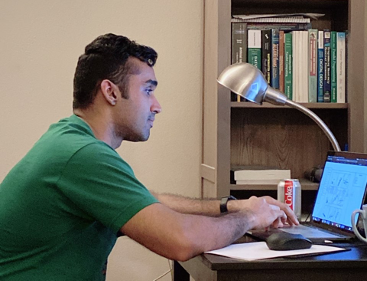

I am a third year PhD student at The Ohio State University. My research interests are Interepretable AI, NLP and Visualization. I currently being advised by Professor Han-Wei Shen and Professor Yu Su at the CSE Department.
Before moving to OSU I finished a B.E. Hons degree at BITS-Pilani Hyderabad, India.
Piyush Chawla
chawla_dot_81_at_osu_dot_edu
Dreese Lab
Room 680
2015 Neil Ave
Columbus, OH 43210
Projects
Publications
2020
- Piyush Chawla, Subhashis Hazarika, Han-Wei Shen, Token-wise sentiment decomposition for ConvNet: Visualizing a sentiment classifier, PacificVis 2020
2019
- Piyush Chawla, Diego Esteves, Karthik Pujar, Jens Lehmann, SimpleLSTM: A Deep-Learning Approach to Simple-Claims Classification, EPIA 2019
2018
- Diego Esteves, AJ Reddy, Piyush Chawla, Jens Lehmann, Belittling the source: trustworthiness indicators to obfuscate fake news on the web, EMNLP 2018
- Piyush Chawla, Natural Language Incorporation in Knowledge Graph Completion, CSCUBS (Uni-Bonn) 2018
Teaching
Since Fall 2019 I have been involved in teaching both as a GTA and Instructor (since Fall 2020).
- Spring 2021: CSE 2221 Software I
- Fall 2020: CSE 2221 Software I
- Summer 2020: CSE 2221 Software I
- Spring 2020: CSE 1222 Introduction to Computer Programming in C++ for Engineers and Scientists
- Fall 2019: CSE 2431 Systems II